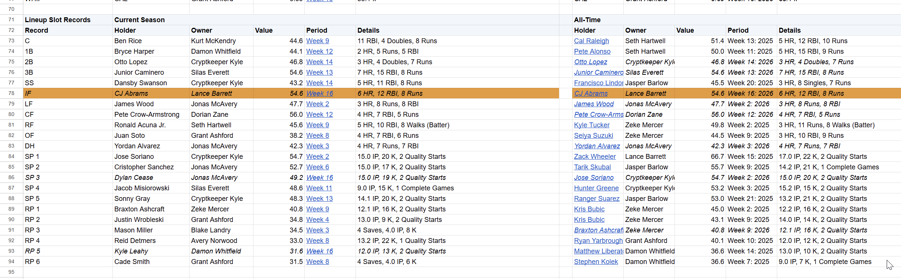
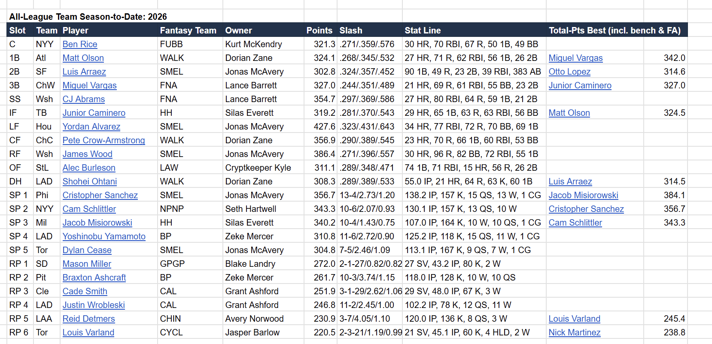
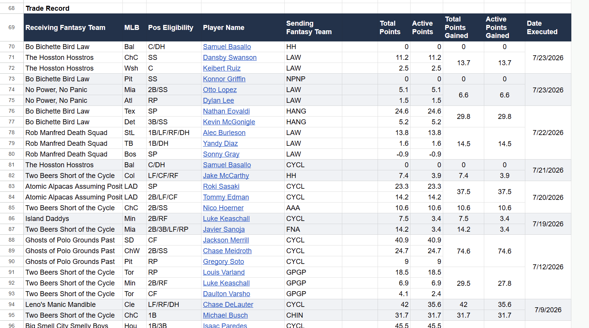
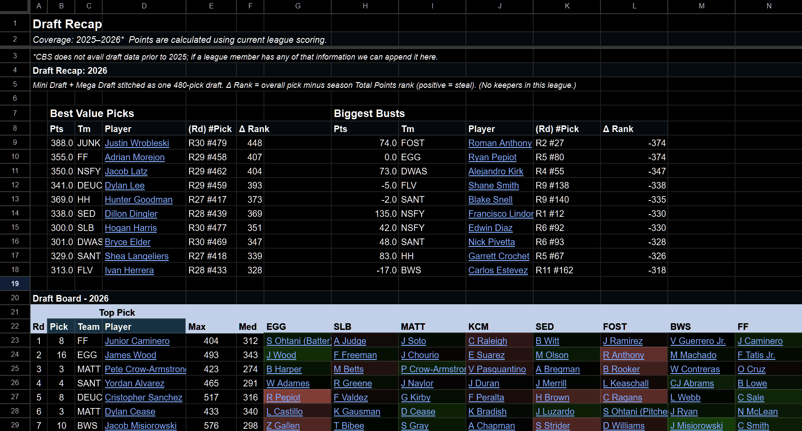
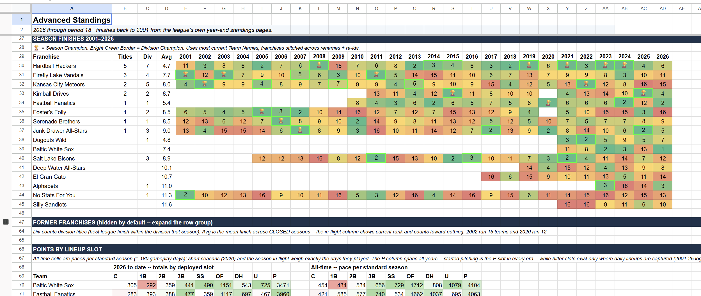
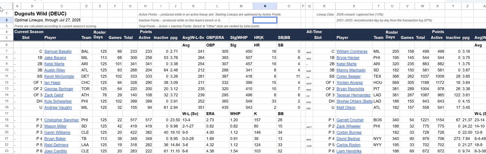
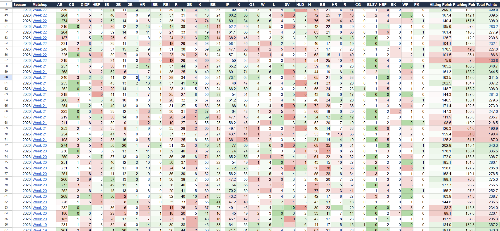
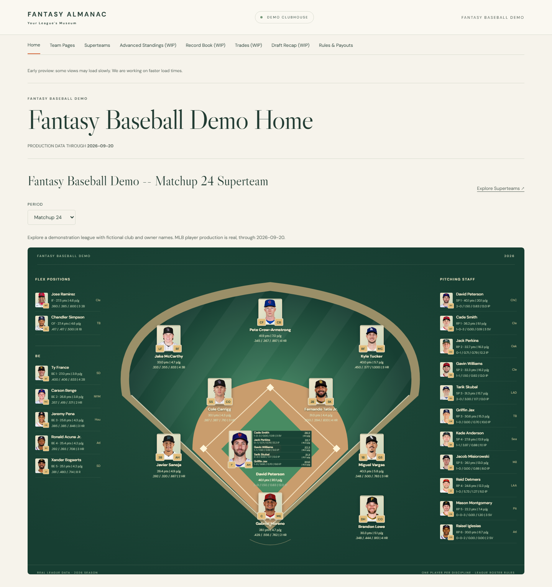

01
Records
Best and worst performances are tracked for every scored statistic and its rate stats, using your league’s settings and start/sit decisions.

Your league’s history • Free to explore

Fantasy League Almanac turns your league’s history into a record book of what actually happened in it: your teams, your scoring, your lineup decisions. Explore it in the browser, or build a Google Sheets almanac for your own league.
The demo needs no installation or account. The Sheets build runs locally and writes to your Google Drive.
The Google Sheets almanac

The downloadable, open-source project builds a Google Sheets Almanac for your league. The guided setup currently supports Windows and ESPN points leagues, both season-points and head-to-head.
It produces all-time standings and records, matchup and draft history, a page for every team, a trade board, and other views built around what actually counted in your fantasy league, not just the MLB stats your players accumulated along the way.
Here’s a read-only Almanac built from a real ESPN league. That’s the actual output as it stands today. Build one for your league →
Real workbook views, built from anonymized fantasy leagues. Select an image to see it at full size.
Best and worst performances are tracked for every scored statistic and its rate stats, using your league’s settings and start/sit decisions.

Completed deals remain scored and measurable alongside a centralized league trading block, something ESPN’s site does not offer.

Find the year’s biggest busts and steals, plus the historical value of each draft slot.

Sharper detail on the current season and historical totals, including who has performed best in drafts, trades and signings.

Each team’s highest producers by lineup slot this year, all-time and single-season, using that league’s scoring and roster restrictions.

Every contest in the league’s history, with a detailed breakdown and a link to its “official” box score.

New in v2.2 · a separate web layer

The demo runs a sample ESPN league with fictional club and owner names and real MLB production. It runs entirely in your browser: standings, team pages with a lineup diamond or table, player statistics, and filters that recompute on the page. There's nothing to install and no account.
The data comes from the same pipeline as the workbook. Filters change what you’re looking at without affecting the underlying data, so you can present your data however you like.
Team pages cover the current roster and club history. Superteams lets you build a lineup from the top performers across your chosen clubs and seasons. The guide explains their filters and controls, along with the plans for pages still taking shape.
Early preview: the first load on a slow connection can take several seconds. Faster loads are planned for 2.3.
Open the demo dashboard →Shared data
The dashboard is the visible part. The valuable work is making the historic data trustworthy.
Fantasy platforms leave years of roster and lineup history behind. The models reconstruct it from transaction logs, season endpoints, scoring settings, and the other evidence that survives, recovering far more of the league than any single source exposes. Some eras are still fuzzier than others, and the Almanac labels those limits instead of laundering estimates into facts.
dbt brings those sources into a shared model. The workbook and dashboard are two presentations of that underlying data; the dashboard does not read the Sheets workbook. Scoring definitions, totals, and display rules travel with the data so the browser can use the same interpretation.
Why I made it
What player has spent the most time on your team over the years? Which owner consistently finds value late in drafts? What was the biggest trade in league history? Which players can a franchise reasonably claim as “their guys”? Just how badly does our one friend in St. Louis overrate Cardinals players?
Fantasy baseball platforms retain much of the underlying data needed to answer these questions, but do not make it easy to access natively.
Current-season views help spot roster strengths, positional holes and plausible trade partners. Get a quick view, for example, of which team has had the worst shortstop production this year, or which has catcher-eligible points accruing on its bench. If your league allows pick trading, the Draft Recap gives an idea what those picks are actually worth.
The weekly recap was where this started: keep the fun of writing league updates, let the Almanac handle the bookkeeping. It’s currently formatted for ESPN’s stone-age front-page editor: the week’s best and worst performances, the points left on benches, the records broken, and whichever configurable oddities happened to fire that week. Think a lucky win for the week’s second-lowest scorer, or one player single-handedly accounting for his team’s margin of victory.
I made it for my own leagues, got encouraging feedback, and eventually cleaned it up enough that somebody who didn’t build it could use it. It’s also become sort of a professional project to sharpen some data-engineering skills. It’s free and open source. There’s no “Almanac account” and nothing to pay for.
Try it
Explore the demo, or get the free workbook build for your own league.
Requirements, setup, support and what’s next are on the get-started page.